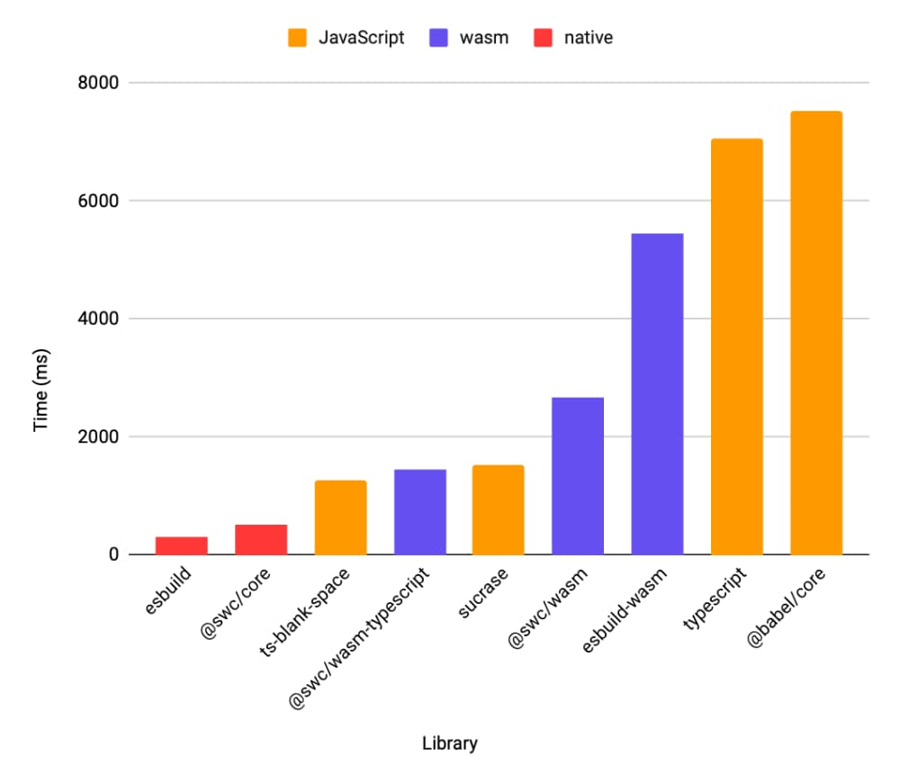
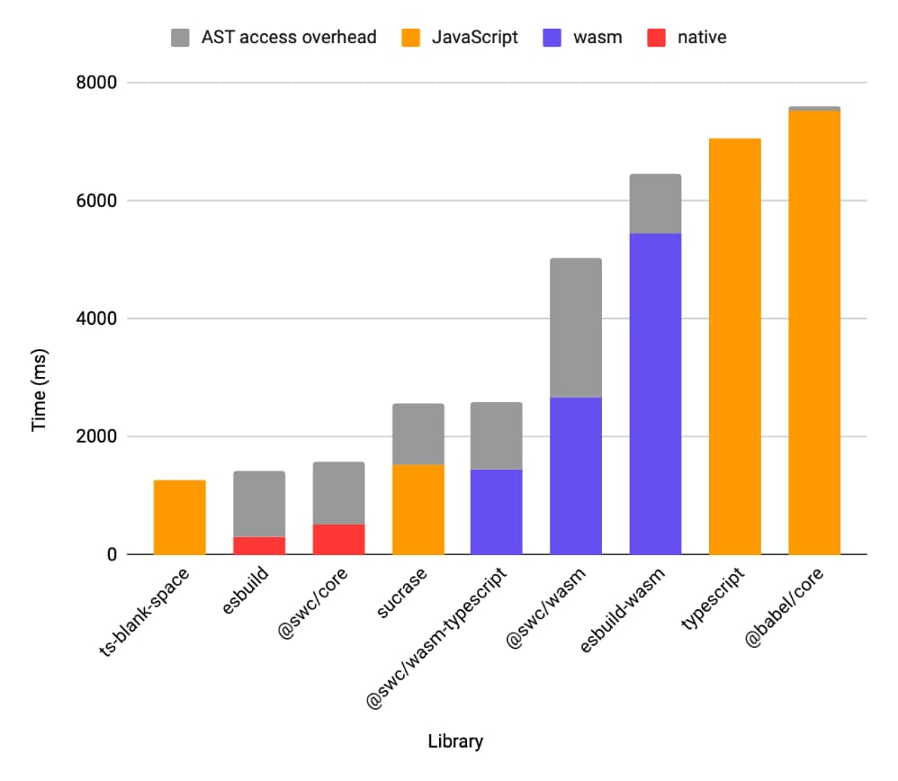

What is ts-blank-space?
ts-blank-space is a fast type-stripping compiler that converts TypeScript to JavaScript. It supports a modern subset of TypeScript by erasing the types and replacing them with whitespace. That's it. It is not a type checker and does not perform any other code transformations.
The underlying technique can improve build performance and simplify development. The implementation is pure TypeScript. It is simple enough to read and understand in a few minutes because it is only 700 lines of code and reuses the original TypeScript parser.
Type-Stripping
The core idea is to use spaces as a substitute for type annotations. You can think of ts-blank-space as a reference implementation of this type-stripping technique. Much like other compiler techniques seen in the JavaScript ecosystem, such as tree-shaking, it is a reusable idea that any TypeScript compiler could implement. Some already do!
Let's look at some examples. If you use the classic TypeScript (tsc) compiler today without customizing any options, you'll see your source code undergo significant transformations.
class Cat<T> {
public whiskers: number;
public tail: T;
constructor(count: number, tail: T) {
this.whiskers = count;
this.tail = tail;
}
}
throw Error();is compiled to:
var Cat = /** @class */ (function () {
function Cat(count, tail) {
this.whiskers = count;
this.tail = tail;
}
return Cat;
}());
throw Error();That's because TypeScript is performing "down-leveling" to convert your modern JavaScript into something that can run on older JavaScript engines. Because this moves the code around, error stacks and breakpoint locations will not match; so sourcemaps are also generated to correct for this.
Let's try disabling down-leveling using the tsconfig.json option target: "esnext":
class Cat {
whiskers;
tail;
constructor(count, tail) {
this.whiskers = count;
this.tail = tail;
}
}
throw Error();This looks much closer to the original code with the types erased. But the output is still visually smaller and occupies fewer lines. This means we're going to have inaccurate error stacks.
// Original source
Error
at Object. (cat.ts:11:7) // With TypeScript's output
Error
at Object. (cat.js:8:7) One solution to this relocation problem is to ask TypeScript to generate sourcemaps. After all, debuggers and runtimes know how to use sourcemaps to translate the filenames and coordinates used for breakpoints and error stacks. But could we do better?
Yes! Here's what the generated code looks like with ts-blank-space:
class Cat {
whiskers ;
tail ;
constructor(count , tail ) {
this.whiskers = count;
this.tail = tail;
}
}
throw Error();This might look a little wacky. However, by leaving the code coordinates unchanged, we've also eliminated the need to generate sourcemaps. There's no encoding and decoding locations. Error stack coordinates are always accurate!
Finally, we can teach the JS engine and debugger about the original filename by adding one line (//# sourceURL=cat.ts) to the end of the JS file. This magic comment is part of the sourcemap specification and is supported natively, so we end up naming files correctly in error stacks with no loss of performance.
Build Performance Benefits
The typical build operations to emit JavaScript code from TypeScript source involves:
- Parsing the TypeScript into TypeScript's Abstract Syntax Tree (AST)
- Transforming this into a JavaScript AST
- Generating code from the JavaScript AST
- Sourcemap mapping calculation from the generated code to the original locations in the AST
ts-blank-space replaces steps 2, 3, 4 with basic string substitution on spans extracted from the AST. The AST is used merely to discover the start and end points of the type annotations in order to shake them off.
Skipping this work is what makes this a swift approach. Additional time is saved by decreasing the number of sourcemaps that need to be merged during build scenarios that involve a sequence of transforms and corresponding sourcemaps.
Build Performance Results
Here's a micro-benchmark of what happens when compiling a huge TypeScript file (52 KLoC) ten times using a variety of build tools.

For the supported subset of TypeScript, ts-blank-space is 5.6x faster than tsc. Today, it appears to be the fastest emitter written in JavaScript, and it even beats the Wasm-based emitters. Credit for this speed should primarily be attributed to the highly-optimized TypeScript parser that is doing the heavy lifting. It is also worth calling out the impressive speed of sucrase, which is also written in JavaScript and is only marginally slower even though it supports additional syntax.
Performance Results with AST Re-use
At Bloomberg, we want to use the TypeScript AST for both JavaScript-based analysis and emitting JavaScript. This means we are already paying the cost of generating the TypeScript AST, so ts-blank-space can operate on this as-is.
Here's a similar benchmark in which we measure the combined time to (a) emit JavaScript and (b) generate a JavaScript-accessible AST. babel, @swc/core, and @swc/wasm have APIs to produce the AST. sucrase and esbuild do not provide access to an AST. For these, we fall back to using typescript to provide the AST.

With these requirements, we've found ts-blank-space provides the fastest overall results.
On large files, such as those used in the benchmark, we've seen Garbage Collection (GC) account for up to 17% of build time. With internal benchmarks of real-life code, the file size is typically smaller. Here we've seen ts-blank-space go even faster, with GC dropping closer to 3%.
The full code and results of the benchmark can be found in the perf folder of the repository.
Development Time Benefits
Simpler Startup
Debuggers require sourcemaps to be loaded and processed before app startup in order to reliably set breakpoints in terms of generated coordinates ahead of first execution. Eliminating sourcemaps means fewer moving parts and potentially faster startup.
Faster Errors
Avoiding sourcemaps can also increase runtime performance with respect to Error stacks. Node has the ability to toggle whether runtime processing of Error stacks uses sourcemaps. Node includes a microbenchmark which demonstrates that the cost of reading a mapped error stack is approximately twice that of an unmapped error stack.
> node benchmark/es/error-stack.js
es/error-stack.js n=100000 method="without-sourcemap": 107,059.95251565645
es/error-stack.js n=100000 method="sourcemap": 55,918.729592805634Resilience
Bloomberg is a heavy user of sourcemaps, and we have some engineers who are helping to make them even better. For sourcemaps to work, many different tools must perfectly align end-to-end. This can lead to them sometimes failing. With ts-blank-space your debugging experience will be based on accurate locations even if your environment is misconfigured or you find yourself in situations when sourcemaps would have been inaccessible.
Maintenance Benefits
The default parser used by ts-blank-space is the official TypeScript parser. This maximizes alignment with the upstream TypeScript project. Specifically, this means that it should be trivial for ts-blank-space to support any new syntax that is added to the TypeScript language.
This reduces the effort and compatibility risk associated with maintaining another parser. It also means the project benefits from any performance or correctness improvements that are made to the central TypeScript parser.
Beyond the parser, the remaining code is only 700 lines of TypeScript. This small size makes it easy to review and understand by TypeScript users.
Limitations
ts-blank-space does not support every TypeScript syntax. As such, it may not be suitable for your needs.
JSX is tolerated but not compiled. This means it preserves the tags in the output: *.tsx becomes *.jsx.
We refer to the supported subset as Modern TypeScript because it represents nearly all TypeScript syntax, except for those TypeScript-specific features that may be considered legacy or discouraged in some way - despite not being formally deprecated.
These unsupported TypeScript features already have preferred alternatives:
- Prefix-style type assertions (
<type>value)- ...should be replaced with
as-style type assertions.
- ...should be replaced with
- CommonJS-specific syntax
(import =andexport =)- ...should be replaced with standard ES modules - CommonJS is not supported.
- Instantiated Namespaces (
namespace Fooandmodule Foo)- ...should be replaced with standard ES modules.
The following unsupported TypeScript features must be avoided when using ts-blank-space. Unfortunately the alternatives are not always as concise. We would be excited if more powerful and coherent alternatives than these were to succeed as JavaScript language proposals.
- Enums (
enum)- Alternative patterns include const objects and string unions.
- Constructor Parameter Properties (
constructor(public prop) {})- Explicit field declarations and assignments are needed instead.
Note that ambient Namespaces and ambient Enums are supported (i.e., declare namespace, declare enum).
We've successfully used this TypeScript subset within Bloomberg for many years, following the clear mental model that TypeScript is JavaScript + Types. During this time, the primary unsupported feature that users said they missed was Enums. Most of the time, that need was appeased via the alternative patterns.
Getting Started
ts-blank-space is just a library that transforms strings. It is a single function. It is not a CLI or toolchain.
- If you want to see how the code is transformed, please use the playground.
- The quickest way to really use this library is to use the example Node loader.
- For anything more, you will need to integrate the library into a CLI or toolchain.
Should I use this library?
Only if you want to. While ts-blank-space is battle-tested and used in production at Bloomberg, the idea of it is more important than its implementation.
ts-blank-space has a singular purpose and a limited scope. Many users will continue to be better served by existing tools with more comprehensive scopes. And who knows? If those tools find ways to make use of the ideas presented here, everyone wins! 😉